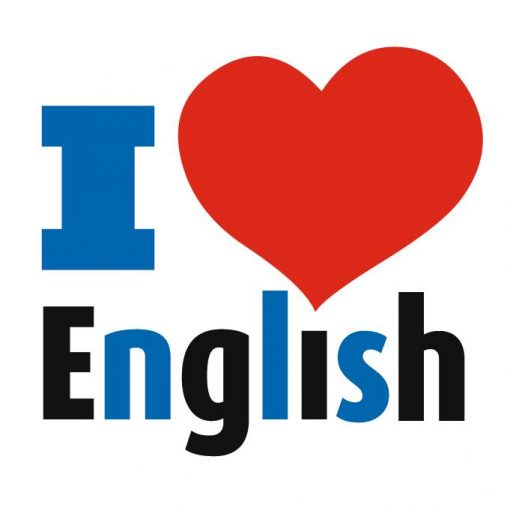

Since I was young, I allways felt a particular attraction towards English language. After a trip to London, where I could barly speak to people, I started seriously learn English on my own. The way English was taught in school was not making it easy for me to get better. I started watching tv shows in English with French subtitles, I paid more attention to the lyrics of the songs I was listening to, checking words in the dictionary and little by little I progressed to be more and more capable of understanding both spoken and written English. After years of progress I realised that I would no be able to have a proper conversation in English because I had no practice, I was incapable of speaking. Since I wasn’t in a position that allowed me to travel to another country to practice, I decided to play onlines games on my computer. Since I allways liked video games, I was the perfect way for me to speak english with other players while staying at home. I played « The division », « Fortnite » and « Apex legends ». While It was difficult at first, the progress I have made has been tremendous. I wish I will have soon the opportunity to use my english in the real world during a trip or in futur professional activities.
created with
Website Builder Software .